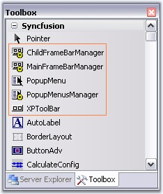
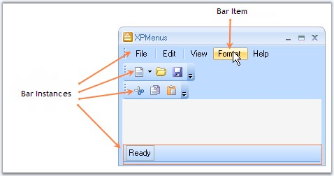
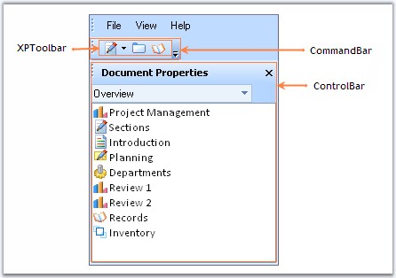

The section gives you an overview of the XPMenus Framework.
The following screen shot displays the menus controls in toolbox.

Figure 711: XPMenus Controls in Toolbox

Figure 712: Toolbars and bar items in XPMenus Framework
BarManager
The XP Menus framework is controlled by the BarManagers. The BarManagers takes care of displaying the menus and toolbars and controls their visibility.
Bar
A Bar is a data structure that represents a toolbar in the XP Menus framework. A BarManager lets users to add or remove bars to their forms during design-time. These bars get logically contained within the BarManager. See Bar Types topic to know about the types of toolbars available.
BarItem
A BarItem is a data structure that represents a clickable item that can be used in toolbars, drop-down menus and context menus. This is analogous to a MenuItem in the .NET framework. To learn more about BarItems, click here.

Figure 713: CommandBar, ControlBar and XPToolbar Added to CommandBar
CommandBar
CommandBar represents a detached toolbar which can host any .NET controls.
ControlBar
A ControlBar is a full-featured docking container that can host any control and be docked along the border of the host form or floated as a top-level window.
XPToolbar
An XP Toolbar is a toolbar-like control with look-and-feel of the XP Menus toolbar. This toolbar can be dropped inside a commandbar. To know how to use XPToolbar in Menus, see XPToolbar topic.
See Also